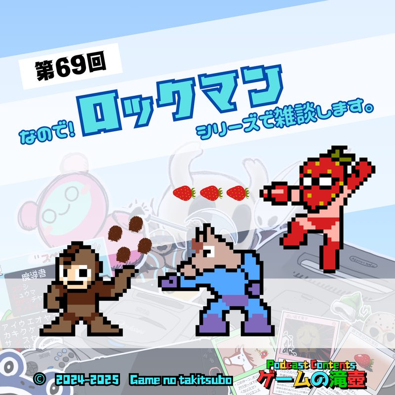
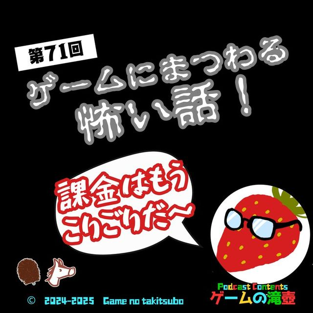
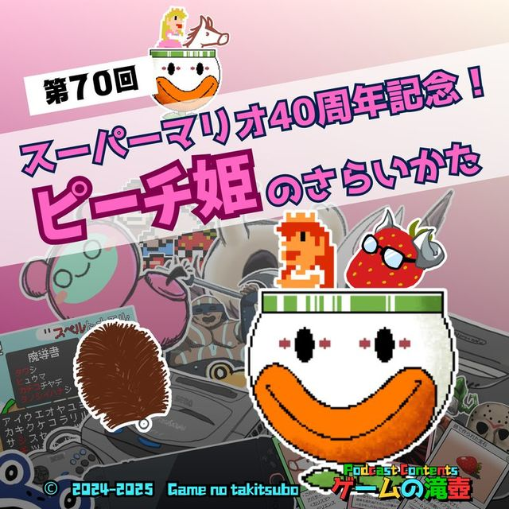
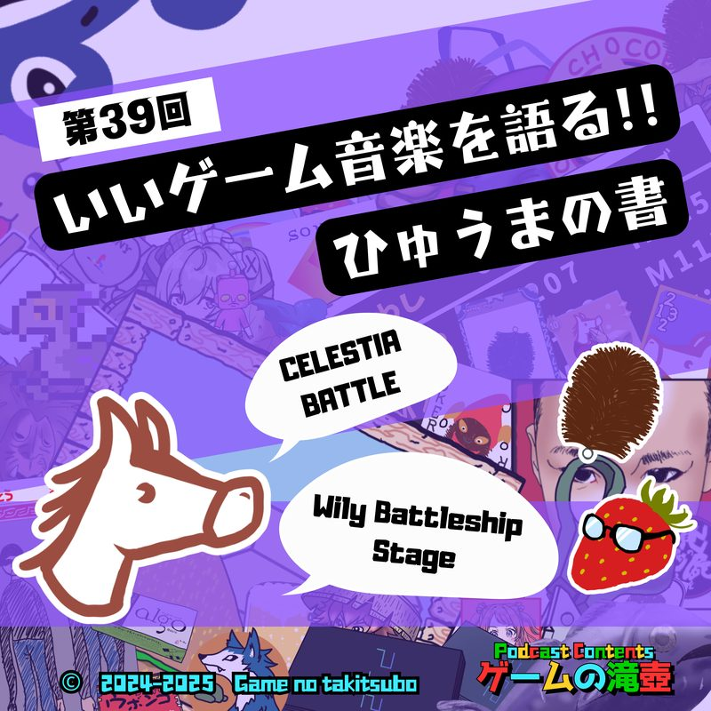
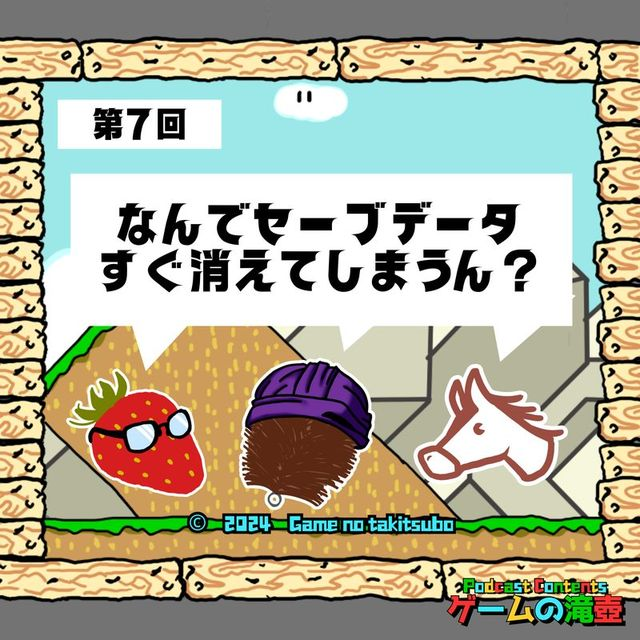
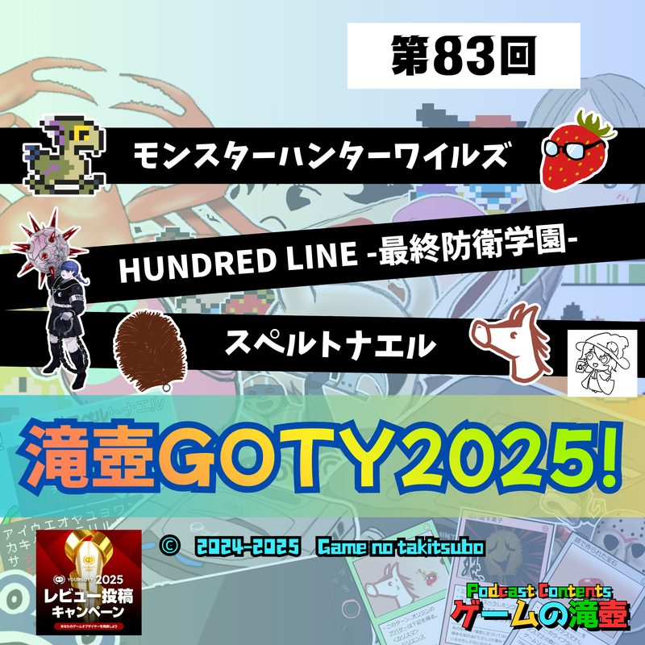

ロックマンシリーズ
ポッドキャスト「ゲームの滝壺」で「ロックマンシリーズ」が話題に出た回の一覧です。
滝壺での登場 7回メインテーマとして語られた回があります。

#692025.09.10⭐ メインで語られた回 なので！ ロックマンシリーズで雑談します。 ⏱ 00:43〜 ロックマンシリーズ初代ロックマンやロックマンXはもちろん、ロックマン・ザ・パワーバトルやロックマンズサッカーの話題も出ます！ ワイリーーッ！！ #812025.12.03💬 トーク内で登場
人の子よ… 年末年始に備えなさい… 親類 or 人類 と遊びたいパーティゲーム
年末年始に親類…そして人類と遊びたい、神、悪魔、クッパ軍団、ウイルスなどの方はぜひお聴きください！
#812025.12.03💬 トーク内で登場
人の子よ… 年末年始に備えなさい… 親類 or 人類 と遊びたいパーティゲーム
年末年始に親類…そして人類と遊びたい、神、悪魔、クッパ軍団、ウイルスなどの方はぜひお聴きください！

#712025.09.24💬 トーク内で登場 ゲームにまつわる怖い話！ 課金はもうこりごりだ～ まだまだ残暑が続くということで、おのおの怖い話を持ち寄りましたが、果たして…？ ゲームに関係する怖い話をお持ちの方、ぜひ教えてください。
#702025.09.17💬 トーク内で登場 スーパーマリオ40周年記念！「ピーチ姫のさらいかた」 スーパーマリオブラザーズの発売から40年… 幾度もピーチ姫をさらってきたクッパ軍団の恐るべき手法を、2人のクッパ様と共に振り返ります。 #582025.07.02💬 トーク内で登場
わるい敵 ～わるい村 ep03～ 同時上映 リアル桃鉄
わるい敵には ご用心
#582025.07.02💬 トーク内で登場
わるい敵 ～わるい村 ep03～ 同時上映 リアル桃鉄
わるい敵には ご用心

#392025.02.19💬 トーク内で登場 いいゲーム音楽を語る！ ～ひゅうまの書～ ロックマン、東方シリーズ、テイルズオブエターニア… ひゅうまの選ぶいいゲーム音楽が、あなたの記憶を掘り起こします……
#72024.07.10💬 トーク内で登場 セーブデータ消えたことない人いない説 今回のテーマはセーブデータに関する思い出。 セーブデータが消えた／消してしまった話からセーブデータをコピーされた話、メモリーカードがパンクする話まで！ ドラゴンクエストシリーズを題材にセーブデータの歴史も扱います。TITLES IN SERIESシリーズ作品が登場した回
 #1002026.04.08💬 トーク内で登場
100点満点のゲーム！！
この回の作品: ロックマン3
#1002026.04.08💬 トーク内で登場
100点満点のゲーム！！
この回の作品: ロックマン3
 #862026.01.07💬 トーク内で登場
新春！ 五十音全部にふさわしいゲームタイトルを集めて滝壺かるたを作ろう！
この回の作品: ロックマン
#862026.01.07💬 トーク内で登場
新春！ 五十音全部にふさわしいゲームタイトルを集めて滝壺かるたを作ろう！
この回の作品: ロックマン

#832025.12.17💬 トーク内で登場 モンスターハンターワイルズ、HUNDRED LINE -最終防衛学園-、スペルトナエル…滝壺GOTY2025！ この回の作品: ロックマン: デュアル オーバーライド #732025.10.08💬 トーク内で登場
君はフロムのVRゲームを知っているか！？ Déraciné（デラシネ）
この回の作品: ロックマン クラシックス コレクション
#732025.10.08💬 トーク内で登場
君はフロムのVRゲームを知っているか！？ Déraciné（デラシネ）
この回の作品: ロックマン クラシックス コレクション
 #422025.03.12💬 トーク内で登場
一方その頃、FF4はダチョウを使った…あの素晴らしいゲームCMをもう一度
この回の作品: ロックマンDASH
#422025.03.12💬 トーク内で登場
一方その頃、FF4はダチョウを使った…あの素晴らしいゲームCMをもう一度
この回の作品: ロックマンDASH
 #332025.01.08💬 トーク内で登場
スケールのデカいゲーム！！！！！！
この回の作品: ロックマンDASH2
#332025.01.08💬 トーク内で登場
スケールのデカいゲーム！！！！！！
この回の作品: ロックマンDASH2
 #62024.07.03💬 トーク内で登場
初めて遊んだゲームは？ たわしたちのゲーム史
この回の作品: ロックマンワールド3、ロックマンワールド4
#62024.07.03💬 トーク内で登場
初めて遊んだゲームは？ たわしたちのゲーム史
この回の作品: ロックマンワールド3、ロックマンワールド4
SAME SERIES同シリーズのタイトル
TALKED TOGETHER同じ回で話題に出たタイトル
🎧 気になった回は、各ページのプレイヤーからすぐ再生できます。
「ロックマンシリーズ」の話がもっと聴きたくなったら、おたよりでリクエストしてもらえると番組が喜びます。